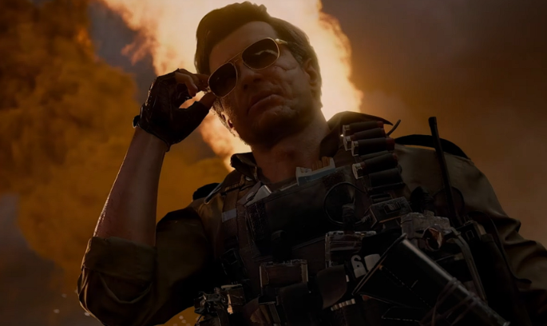

В сети обратили внимание на портфолио аналитика, который трудится в Activision более двух лет и приложил руку к запуску Call of Duty: Modern Warfare 3 (2023) и последующей Call of Duty: Black Ops 6. По словам сотрудника, последняя уже успела стать самой прибыльной игрой компании с момента своего выхода в ноябре 2024 года.
Точная выручка от продаж Call of Duty: Black Ops 6 и микротранзакций не называется, но она явно должна быть более 2,75 миллиарда долларов. Именно столько на момент 2020 года Activision принесли Black Ops 2 и Black Ops 3.
Многие пользователи удивились, что Call of Duty: Black Ops 6 смогла стать самой прибыльной игрой Activision даже вместе с релизом в подписке Game Pass. Однако шутер отлично продаётся даже на консолях PlayStation. Не исключено и то, что подписчики Game Pass тратят средства на различный косметический контент.
А в Black Ops 6 его действительно много — в шутере постоянно проходят коллаборации. Например, недавно появился набор с Джеем и Молчаливым Бобом. Также Activision сотрудничала с «Игрой в кальмара», «Терминатором», «Черепашками-ниндзя» и не только. Причём бывали случаи, когда огромная стоимость новинок злила игроков.
